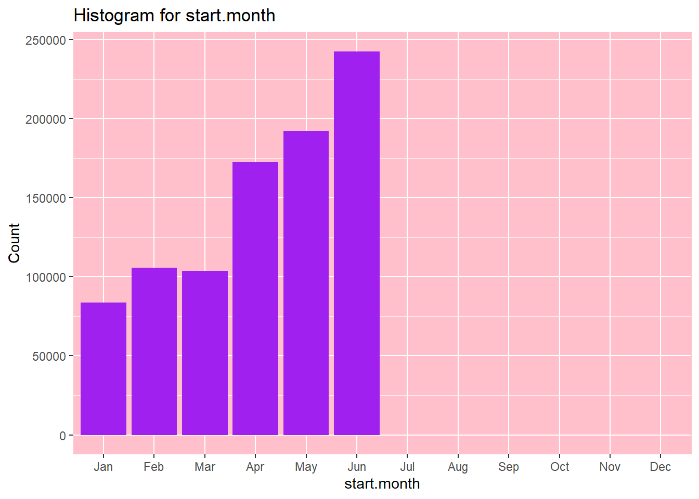
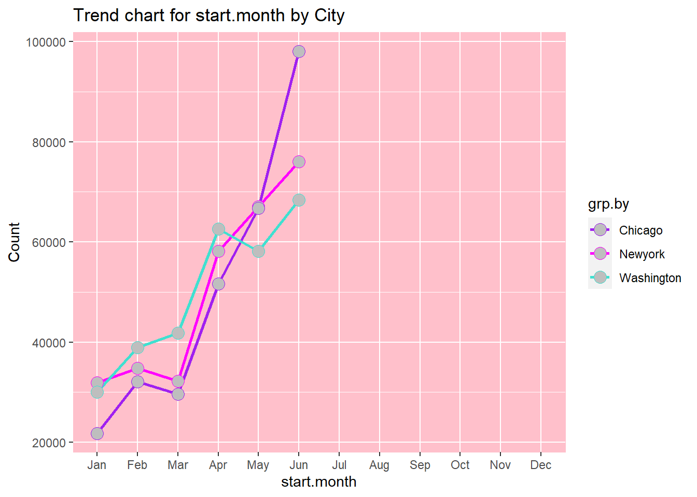
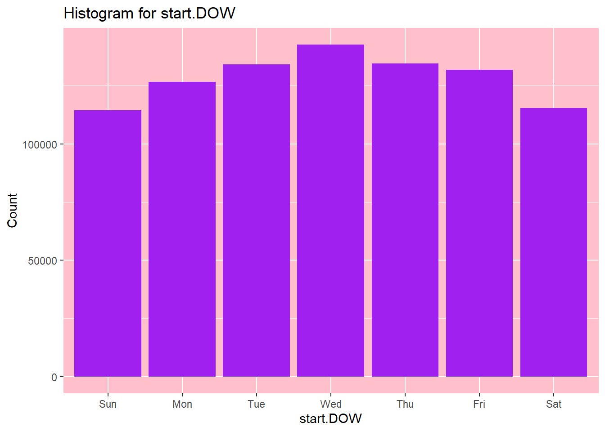
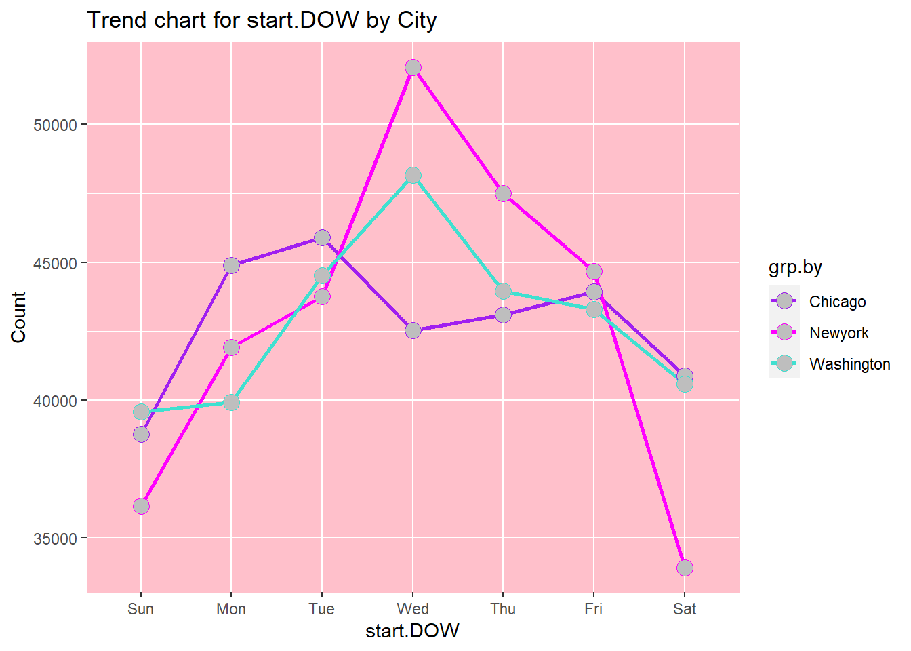
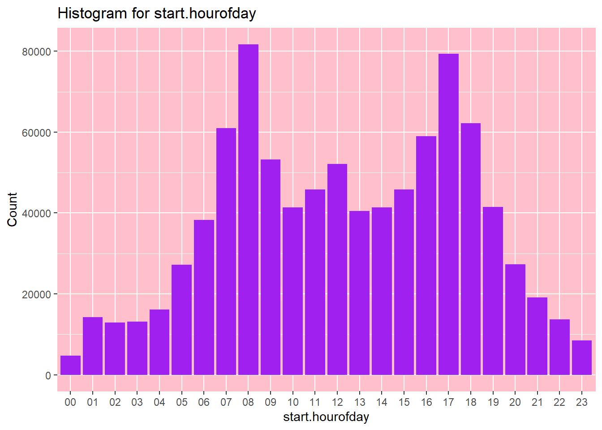
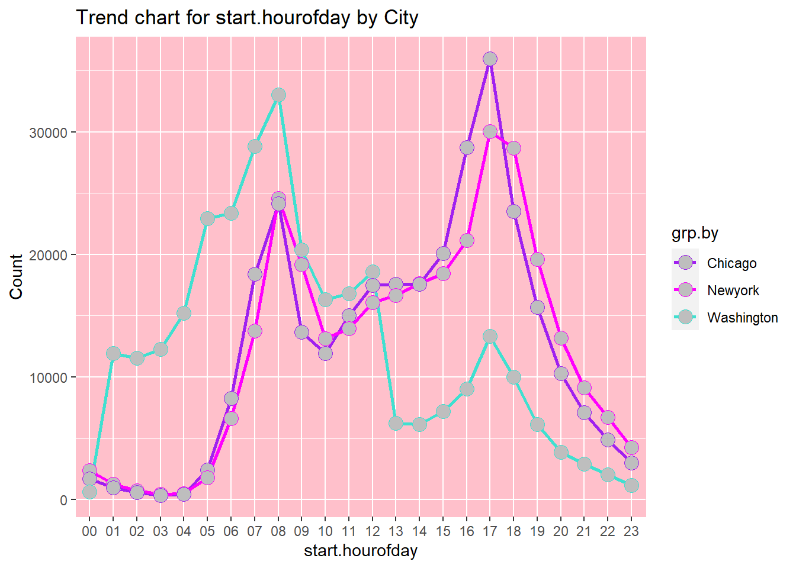
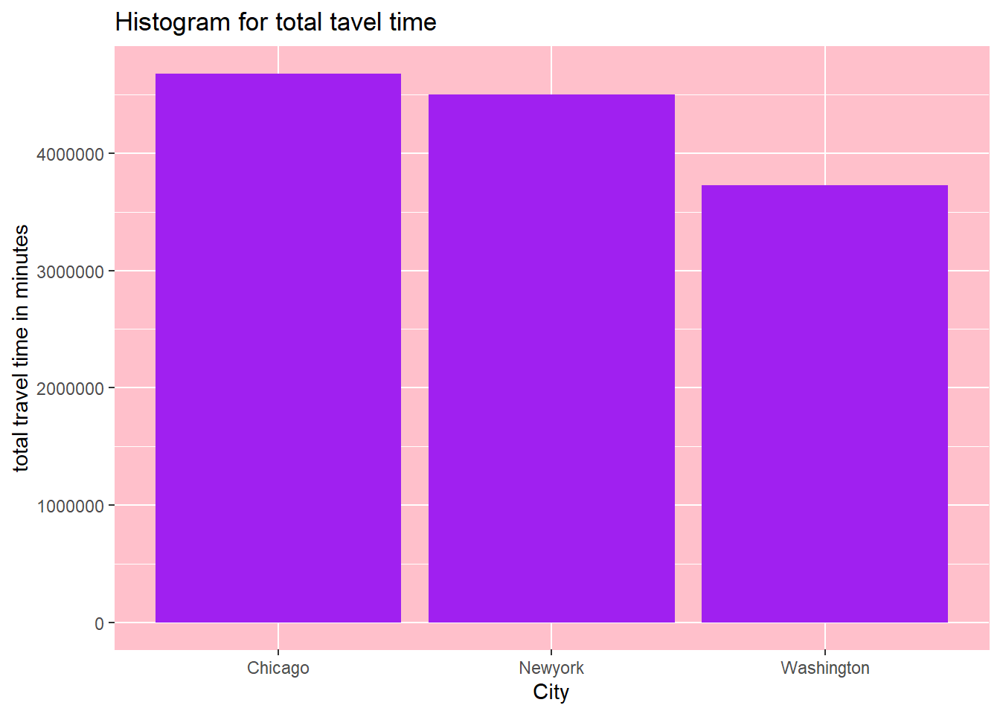
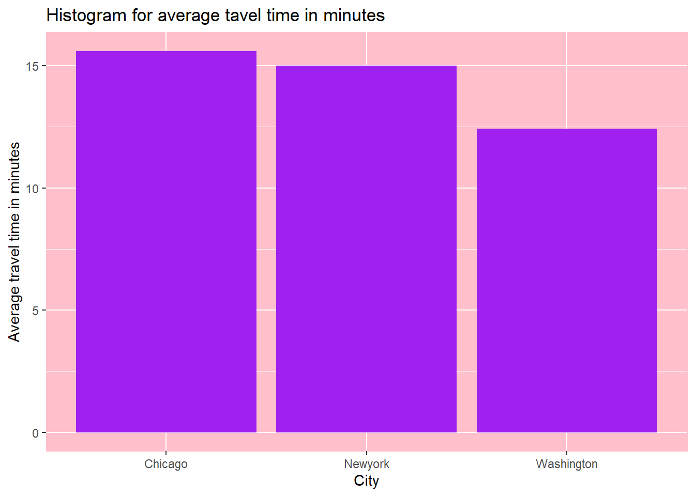
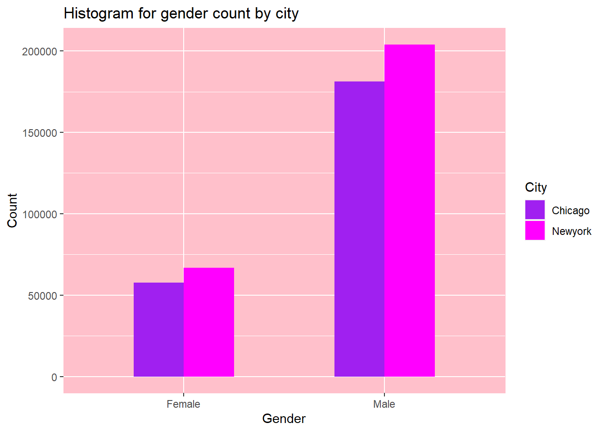

Bikeshare data analysis for Udacity data science nano degree
This project was completed as a part of the udacity data science with R nano degree program. The project goal was to formulate and answer some questions using the bikeshare data from three US cities.
knitr::opts_chunk$set(echo = TRUE)
library(data.table)## data.table 1.12.8 using 2 threads (see ?getDTthreads). Latest news: r-datatable.comlibrary(stringr)
library(ggplot2)
#plot background theme, chosen by my 6 yr old :)
th1<- theme(
panel.background = element_rect(fill = "pink",
colour = "pink",
size = 0.5, linetype = "solid"),
panel.grid.major = element_line(size = 0.5, linetype = 'solid',
colour = "white"),
panel.grid.minor = element_line(size = 0.25, linetype = 'solid',
colour = "white"))
# color palette vector for line plots
c.palette <- c("purple", "magenta", "turquoise")Question 1: Popular times of travel
What is the most common month ? What is the most common day of week? What is the most common hour of day?
##Step a) Data Cleaning and organization - In the first R code chunk, I used data.table library to read only the columns of interest, and to create a new column ‘City’ (fill it with values Chicago, Newyork and Washington respectively) for all three data sets. I then combined all of the data tables into one using rbind. Finally, I used the stringr replace all function for replacing the spaces in column names with a dot. This wrangling work resulted in creating one table for creating all of the summaries and visualizations needed to answer this question.
ch <- fread("Data/chicago.csv", select = c(2,3,4)) # read csv as data table
ch[,"City":="Chicago"]
ny <- fread('Data/new-york-city.csv', select = c(2,3,4))
ny[,"City":= "Newyork"]
wa <- fread('Data/washington.csv', select = c(2,3,4))
wa[,"City":= "Washington"]
dt <- rbind(ch,ny,wa) #combine data tables
names(dt) <- str_replace_all(names(dt), c(" "=".")) #replace empty space in column name with a .
strt <- as.POSIXct(dt$Start.Time) #POSIX for timestamps as calendar times
dt[, "start.month" := strftime(strt, "%b")] #extracting month from timestamp and storing in a new column start.month
dt[, "start.DOW" := strftime(strt, "%a")] #extracting day of week from timestamp and storing in a new column start.DOW
dt[, "start.hourofday" := strftime(strt, "%H")] #extracting hour of day from timestamp and storing in a new column start.hourofday
head(dt)## Start.Time End.Time Trip.Duration City start.month start.DOW start.hourofday
## 1: 2017-06-23 15:09:32 2017-06-23 15:14:53 321 Chicago Jun Fri 15
## 2: 2017-05-25 18:19:03 2017-05-25 18:45:53 1610 Chicago May Thu 18
## 3: 2017-01-04 08:27:49 2017-01-04 08:34:45 416 Chicago Jan Wed 08
## 4: 2017-03-06 13:49:38 2017-03-06 13:55:28 350 Chicago Mar Mon 13
## 5: 2017-01-17 14:53:07 2017-01-17 15:02:01 534 Chicago Jan Tue 14
## 6: 2017-06-26 09:01:20 2017-06-26 09:11:06 586 Chicago Jun Mon 09##Step b) Functions for creating summaries i) Get.Most.Common –> returns the most common (i.e. the highest count) metric combined for the three cities (overall) as well as broken down per city (grouped)
Get.Most.Common <- function(metric, grp.by){
usr_input1<- metric
usr_input2<- grp.by
txt_usr_input1<- deparse((substitute(metric))) # only retaining the text of the argument
txt_usr_input2<-deparse((substitute(grp.by))) # only retaining the text of the argument
temp.overall<- dt[, .N, by=.(metric)] #create list of count by metric (i.e. month, DOW or hour) for the entrie table
overall <- temp.overall[, .SD[which.max(N)]] # find the highest count i.e. the most common
setnames(overall, "metric",sub('...','',txt_usr_input1)) #output table headers to reflect input text
setnames(overall, "N", "Overall_ Count")
temp.bygrp <- dt[, .N, by=.(grp.by, metric)] # create count grouped by city and the metric
bygrp <-temp.bygrp[, .SD[which.max(N)], by =grp.by] #find max
setnames(bygrp, "grp.by",sub('...','',txt_usr_input2)) #rename headers
setnames(bygrp, "metric",sub('...','',txt_usr_input1))
setnames(bygrp, "N", "Grouped_ Count")
result <- list("Most Common Overall"=overall, "Most Common Grouped"= bygrp) #combine outputs into a list since a function can only have
return(result)
}
print("-----Most common Month-----")## [1] "-----Most common Month-----"Get.Most.Common(dt$start.month, dt$City)## $`Most Common Overall`
## start.month Overall_ Count
## 1: Jun 242442
##
## $`Most Common Grouped`
## City start.month Grouped_ Count
## 1: Chicago Jun 98081
## 2: Newyork Jun 76022
## 3: Washington Jun 68339print("-----Most common day of the week-----")## [1] "-----Most common day of the week-----"Get.Most.Common(dt$start.DOW, dt$City)## $`Most Common Overall`
## start.DOW Overall_ Count
## 1: Wed 142773
##
## $`Most Common Grouped`
## City start.DOW Grouped_ Count
## 1: Chicago Tue 45912
## 2: Newyork Wed 52087
## 3: Washington Wed 48156print("-----Most common hour of the day-----")## [1] "-----Most common hour of the day-----"Get.Most.Common(dt$start.hourofday,dt$City)## $`Most Common Overall`
## start.hourofday Overall_ Count
## 1: 08 81734
##
## $`Most Common Grouped`
## City start.hourofday Grouped_ Count
## 1: Chicago 17 35992
## 2: Newyork 17 30041
## 3: Washington 08 33019- Freq.Categorical - creates frequency tables for categorical variable input combined for the three cities (overall) as well as broken down per city (grouped). The frequency table supplements the data visualizations created using ggplot2, if viewers need to take a look at exact numbers for a certain metric.
#function to calculate frequency tables and plots by metric
#1-deparse will get text out of user input - for creating dynamic plot labels
#2-Overall frequency followed by bygrp(by city) frequency table using data.table functions
#3 - c.palette specifies color palette for the bygrp(by city) plots.
#4- create a list of ggplot items that are common to all plots.
#5 -Conditional (if else) to order by monthor by day - do this forboth overall and bygrp(by city)plots.
freq.categorical <- function(metric, grp.by){
txt_usr_input1<- sub('...','',deparse((substitute(metric)))) #1
txt_usr_input2<- sub('...','',deparse((substitute(grp.by))))
temp.overall<- dt[, .N, by=.(metric)]#summarizing data
overall <- temp.overall[order(-N)] #2
temp.bygrp <- dt[, .N, by=.(grp.by, metric)]
bygrp <- temp.bygrp[order(dt, -N)] #2
c.palette <- c("purple", "magenta", "turquoise")#3
#4 (for overall)
p<- list(
geom_bar(stat = "identity", fill = "purple"),
ggtitle(paste0('Histogram for ', txt_usr_input1)),
scale_y_continuous(labels = function(x) format(x, scientific = FALSE)),
th1,labs(x = paste0(txt_usr_input1), y = 'Count')
)
#4 (for bygrp)
p2 <- list(geom_line(size = 1) ,
scale_y_continuous(labels = function(x) format(x, scientific = FALSE)),
geom_point( size=4, shape=21,fill="grey"),
scale_color_manual(values = c.palette), th1,
ggtitle(paste0('Trend chart for ', txt_usr_input1, ' by ', txt_usr_input2)),
labs(x = paste0(txt_usr_input1), y = 'Count')
)
# 5 conditional
#if DOW (string) in the argument, then factor the metric column with levels as ordered days of week with Sunday being first day
if(str_detect(txt_usr_input1, "DOW")) {
overall$metric <- factor(overall$metric,
levels =c("Sun", "Mon", "Tue", "Wed", "Thu", "Fri", "Sat"))
overall<- overall[order(overall$metric)]
bygrp$metric <- factor(bygrp$metric,
levels =c("Sun", "Mon", "Tue", "Wed", "Thu", "Fri", "Sat"))
bygrp<- bygrp[order(bygrp$metric)]
pltx <- ggplot(data=overall, aes_string(x=names(overall)[1], y = names(overall)[2])) + p
plt2x<-ggplot(data=bygrp, aes_string(x=names(bygrp)[2], y=names(bygrp)[3], group = names(bygrp)[1], colour = names(bygrp)[1])) +p2
print(pltx)
print(plt2x)
#elseif month(string) in the argument, then use the month.abb function to order month JAn - DEc
}else if(str_detect(txt_usr_input1, "month")){
pltx <-ggplot(data=overall, aes_string(x=names(overall)[1], y = names(overall)[2])) +
scale_x_discrete(limits = month.abb) + p
plt2x<-ggplot(data=bygrp, aes_string(x=names(bygrp)[2], y=names(bygrp)[3], group = names(bygrp)[1], colour = names(bygrp)[1])) +
scale_x_discrete(limits = month.abb) + p2
print(pltx)
print(plt2x)
# else plot and print
}else{
pltx <- ggplot(data=overall, aes_string(x=names(overall)[1], y = names(overall)[2])) + p
plt2x<-ggplot(data=bygrp, aes_string(x=names(bygrp)[2], y=names(bygrp)[3], group = names(bygrp)[1], colour = names(bygrp)[1])) +p2
print(pltx)
print(plt2x)
}
result <- list("Overall"=overall, "Grouped"= bygrp) #combining summary result
return(result)
}
freq.categorical(dt$start.month, dt$City)
## $Overall
## metric N
## 1: Jun 242442
## 2: May 191963
## 3: Apr 172455
## 4: Feb 105730
## 5: Mar 103666
## 6: Jan 83744
##
## $Grouped
## grp.by metric N
## 1: Chicago Jun 98081
## 2: Newyork Jun 76022
## 3: Washington Jun 68339
## 4: Newyork May 67015
## 5: Chicago May 66755
## 6: Washington Apr 62620
## 7: Washington May 58193
## 8: Newyork Apr 58176
## 9: Chicago Apr 51659
## 10: Washington Mar 41863
## 11: Washington Feb 38932
## 12: Newyork Feb 34741
## 13: Newyork Mar 32164
## 14: Chicago Feb 32057
## 15: Newyork Jan 31882
## 16: Washington Jan 30053
## 17: Chicago Mar 29639
## 18: Chicago Jan 21809freq.categorical(dt$start.DOW, dt$City)
## $Overall
## metric N
## 1: Sun 114502
## 2: Mon 126734
## 3: Tue 134183
## 4: Wed 142773
## 5: Thu 134538
## 6: Fri 131866
## 7: Sat 115404
##
## $Grouped
## grp.by metric N
## 1: Washington Sun 39576
## 2: Chicago Sun 38775
## 3: Newyork Sun 36151
## 4: Chicago Mon 44881
## 5: Newyork Mon 41923
## 6: Washington Mon 39930
## 7: Chicago Tue 45912
## 8: Washington Tue 44519
## 9: Newyork Tue 43752
## 10: Newyork Wed 52087
## 11: Washington Wed 48156
## 12: Chicago Wed 42530
## 13: Newyork Thu 47497
## 14: Washington Thu 43946
## 15: Chicago Thu 43095
## 16: Newyork Fri 44664
## 17: Chicago Fri 43922
## 18: Washington Fri 43280
## 19: Chicago Sat 40885
## 20: Washington Sat 40593
## 21: Newyork Sat 33926
## grp.by metric Nfreq.categorical(dt$start.hourofday, dt$City)
## $Overall
## metric N
## 1: 08 81734
## 2: 17 79373
## 3: 18 62237
## 4: 07 61003
## 5: 16 58937
## 6: 09 53215
## 7: 12 52109
## 8: 11 45799
## 9: 15 45756
## 10: 19 41450
## 11: 10 41401
## 12: 14 41381
## 13: 13 40487
## 14: 06 38245
## 15: 20 27341
## 16: 05 27165
## 17: 21 19142
## 18: 04 16170
## 19: 01 14211
## 20: 22 13650
## 21: 03 13108
## 22: 02 12910
## 23: 23 8436
## 24: 00 4740
## metric N
##
## $Grouped
## grp.by metric N
## 1: Chicago 17 35992
## 2: Washington 08 33019
## 3: Newyork 17 30041
## 4: Washington 07 28848
## 5: Chicago 16 28742
## 6: Newyork 18 28702
## 7: Newyork 08 24581
## 8: Chicago 08 24134
## 9: Chicago 18 23512
## 10: Washington 06 23381
## 11: Washington 05 22931
## 12: Newyork 16 21161
## 13: Washington 09 20360
## 14: Chicago 15 20108
## 15: Newyork 19 19611
## 16: Newyork 09 19164
## 17: Washington 12 18576
## 18: Newyork 15 18455
## 19: Chicago 07 18380
## 20: Newyork 14 17630
## 21: Chicago 14 17596
## 22: Chicago 13 17559
## 23: Chicago 12 17467
## 24: Washington 11 16813
## 25: Newyork 13 16686
## 26: Washington 10 16315
## 27: Newyork 12 16066
## 28: Chicago 19 15715
## 29: Washington 04 15223
## 30: Chicago 11 15040
## 31: Newyork 11 13946
## 32: Newyork 07 13775
## 33: Chicago 09 13691
## 34: Washington 17 13340
## 35: Newyork 20 13184
## 36: Newyork 10 13134
## 37: Washington 03 12290
## 38: Chicago 10 11952
## 39: Washington 01 11942
## 40: Washington 02 11561
## 41: Chicago 20 10301
## 42: Washington 18 10023
## 43: Newyork 21 9120
## 44: Washington 16 9034
## 45: Chicago 06 8246
## 46: Washington 15 7193
## 47: Chicago 21 7103
## 48: Newyork 22 6713
## 49: Newyork 06 6618
## 50: Washington 13 6242
## 51: Washington 14 6155
## 52: Washington 19 6124
## 53: Chicago 22 4895
## 54: Newyork 23 4265
## 55: Washington 20 3856
## 56: Chicago 23 3014
## 57: Washington 21 2919
## 58: Chicago 05 2437
## 59: Newyork 00 2398
## 60: Washington 22 2042
## 61: Newyork 05 1797
## 62: Chicago 00 1686
## 63: Newyork 01 1287
## 64: Washington 23 1157
## 65: Chicago 01 982
## 66: Newyork 02 740
## 67: Washington 00 656
## 68: Chicago 02 609
## 69: Newyork 04 480
## 70: Chicago 04 467
## 71: Newyork 03 446
## 72: Chicago 03 372
## grp.by metric N##Step c) Results summary June is the most common rental month overall, as well as for each of the cities. This may be driven by warm summer temperatures, tourists visitings due to school holidays etc. Wednesday is the most common day for start of the rentals overall. When broken down by the city, we see that wednesday is still the most comon rental start day for New York and washington, but for Chicgo the most common day of retnal start is Tuesday. weekday rentals may be higher due to workers commuting to work. Hourly data shows a bimodal distribution overall with 08:00am and 5:00pm being the most popular times for travel. This, again is likely due to the workers commuting to and from work at these hours. Trend by city shows the same dual peaks. The 5:00pm peak for washington is small, which may be due to overnight rentals.
#Question 2: Trip duration
What is the total travel time for users in different cities? What is the average travel time for users in different cities?
##Step a) I used the same data table (dt) created in question 1 step a. The below code generates a summary table, a plot for total travel time by city and a plot for average travel time by city in minutes. Note: I could have used the available trip.duration column for this analysis, instead of calculating the duration (start time - end time). This helped me learn more, and output is in minutes opposed to Trip.Duration column which shows the time recorded in seconds.
t1 <- strptime(dt$Start.Time, "%Y-%m-%d %H:%M:%OS") # t1 is date time object containig start time
t2<- strptime(dt$End.Time, "%Y-%m-%d %H:%M:%OS") #t2 is date time object containing end time
dt[, "Duration" := as.numeric(t2-t1)] # creating a new column 'duration' which is difference between start and end times in mins
summary.trip.duration <- dt [, .(Avg.time.min = mean(Duration), #generating summary table by city
total.time.min = sum(Duration),
Count = .N),
by=City
][ order(-total.time.min) ]
print(summary.trip.duration)## City Avg.time.min total.time.min Count
## 1: Chicago 15.60399 4681196 300000
## 2: Newyork 15.00305 4500916 300000
## 3: Washington 12.41812 3725437 300000library(ggplot2)
plt3<- ggplot(data = summary.trip.duration, aes(x=City, y=total.time.min)) + #generating plot for total time
geom_bar(stat = "identity", fill = "purple")+
ggtitle(paste0('Histogram for total tavel time'))+
scale_y_continuous(labels = function(x) format(x, scientific = FALSE))+
th1+labs(y = 'total travel time in minutes')
print(plt3)
plt4 <- ggplot(data = summary.trip.duration, aes(x=City, y=Avg.time.min)) + #generating plot for average time
geom_bar(stat = "identity", fill = "purple")+
ggtitle(paste0('Histogram for average tavel time in minutes'))+
scale_y_continuous(labels = function(x) format(x, scientific = FALSE))+
th1+labs(y = 'Average travel time in minutes')
print(plt4)
##Step b) Summary: Average travel time is shortest for Washington at 12.41 min and longest for Chicago at 15.60 min. Total travel time is highest for chicago at > 4.6 million minutes, closely folowed by NY at ~4.5 million minutes. Washington shows lowest system utilization for all three cities at ~3.7million minutes usage for the 6 month period.
#Question 3: User info
What are the counts of each user type? What are the counts of each gender (only available for NYC and Chicago)? What are the earliest, most recent, most common year of birth (only available for NYC and Chicago)?
##Step a) Counts for each user type, counts for each gender overall, and counts for each gender broken down by city. Again used the data.table library functions for creating summaries and ggplot for visualizations.
ch2 <- fread('Data/chicago.csv', select=c(7,8,9))
ch2[,"City":= "Chicago"]
ny2 <- fread('Data/new-york-city.csv', select = c(7,8,9))
ny2[,"City":= "Newyork"]
wa2 <- fread('Data/washington.csv', select = c(7))
wa2[,"City":= "Washington"]
dt2<- rbind(ch2,ny2,wa2, fill = TRUE)
names(dt2) <- str_replace_all(names(dt2), c(" "=".")) #replace empty space in column name with a .
count.user.type <- dt2[User.Type !=""][,.(Count = .N), by =User.Type][order(-Count)]
print("-------Counts of each user type---------")## [1] "-------Counts of each user type---------"print(count.user.type)## User.Type Count
## 1: Subscriber 728824
## 2: Customer 170483
## 3: Dependent 1gs <- dt2[Gender!=""& !is.na(Gender)][,.(Count=.N), by=Gender]
gs.bycity<- dt2[Gender!=""& !is.na(Gender)][,.(Count=.N), by=.(Gender,City)]
print("-------counts of each gender---------")## [1] "-------counts of each gender---------"print(gs)## Gender Count
## 1: Male 385198
## 2: Female 124541print("-------counts of each gender by city---------")## [1] "-------counts of each gender by city---------"print(gs.bycity)## Gender City Count
## 1: Male Chicago 181190
## 2: Female Chicago 57758
## 3: Male Newyork 204008
## 4: Female Newyork 66783plt5 <-ggplot(data=gs.bycity, aes(x = Gender, y= Count, fill = City)) +
geom_bar(stat="identity", width=.5, position = "dodge")+
scale_y_continuous(labels = function(x) format(x, scientific = FALSE))+
th1+ scale_fill_manual(values = c.palette)+
ggtitle('Histogram for gender count by city')+
labs(x = 'Gender', y = 'Count')
print(plt5)
##Summary: The most common user type is subscriber. More male users overall than female. When looking at comparison by city, both cities individually have more male users.
##Step b) Earliest, most recent and most common year of birth calculation:
#order data table by birth year ascending - get most recent year
r.yr <- dt2[Birth.Year!=""& !is.na(Birth.Year)][,(max(Birth.Year))]
print(paste0("The most recent birth year is ",r.yr))## [1] "The most recent birth year is 2016"#order data table by birth year descending - get earliest year
e.yr <- dt2[Birth.Year!=""& !is.na(Birth.Year)][,(min(Birth.Year))]
print(paste0("The earliest birth year is ",e.yr))## [1] "The earliest birth year is 1885"#count number of occurences of each birht year, and order by count descending to get the most common year on top.
c.yr <- dt2[Birth.Year!=""& !is.na(Birth.Year)][,.(Count=.N), by=Birth.Year][order(-Count)]
head(c.yr,3)## Birth.Year Count
## 1: 1989 25792
## 2: 1988 23440
## 3: 1990 23187plt6 <-ggplot(data=c.yr, aes(x = Birth.Year, y= Count)) +
geom_bar(stat="identity", fill = 'purple')+
scale_x_continuous(limits = c(1939, 2019), breaks = seq(1939, 2019, 10))+
scale_y_continuous(labels = function(x) format(x, scientific = FALSE))+
th1+
ggtitle('Histogram for user count by birth year')+
labs(x = 'Birth Year', y = 'Count')
print(plt6)## Warning: Removed 31 rows containing missing values (position_stack).## Warning: Removed 1 rows containing missing values (geom_bar).
##Summary: The most recent birth year for users is 2016, the earliest birth year is 1885 (which may indicate that some users use the default option) and most common year is 1989.
Thats it. Thanks for reading!